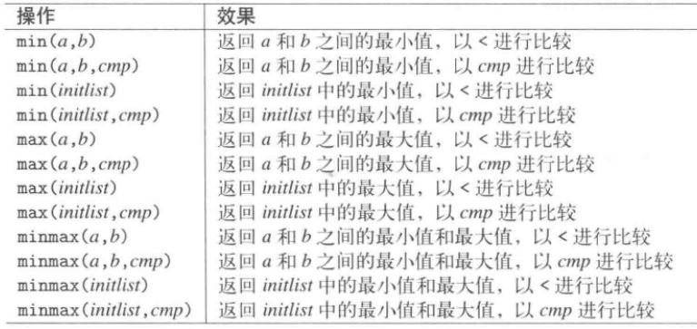

一. pair: #include<utility>
操作函数：
- 构造和赋值：
- pair<T1, T2> p: default构造函数，建立一个pair，元素类型分别为T1和T2，各自以其default构造函数初始化
- pair<T1, T2>p(val1, val2):建造一个pair，类型为T1和T2，以val1和val2为初值进行构造或移动构造
- pair<T1, T2> p(p2)：拷贝构造或移动构造
- p1=p2：拷贝或std::move
- p.first/p.second：获得pair的第一个或第二个value
- p1.swap(p2) / swap(p1, p2)：互换p1和p2的数据
- p1==p2：等价于 (p1.first==p2.first && p1.second==p2.second)
- make_pair(val1, val2)：返回一个pair，带有val1和val2的类型和数值
- get<0>(p) / get<1>(p)：全局函数，等价于p.first/p.second
使用场合：
- 在很多stl中有用到，如map等
- 如果需要返回两种类型，可以返回pair
二. 元组tuple
- 不是寻常的容器，不可以迭代
- 元素类型可以是引用
- 方法/函数：
- 构造：
- tuple<T1, T2, ...Tn> t: 以n个给定类型建立一个tuple，以各元素类型的default构造函数完成初始化
- tuple<T1,T2, ...> t(v1, v2,...）
- tuple<T1, T2> t(p)：建立一个tuple，以给定的pair p初始化（类型必须吻合）
- t = t2：赋值操作
- t = p：将pair p赋值给带两个元素的tuple，pair和tuple的类型必须吻合
- t1==t2/t1 != t2：如果所有元素相等返回true
- <, >, <=, >=：使用字典式比较——？
- t1.swap(t2)：互换t1和t2的数据——始自C++11
- 全局函数swap(t1, t2)：同上，是个——始自C++11
- 全局函数make_tuple：会根据value建立tuple，不需要明确指出元素的类型
- 全局函数tie(ref1, ref2, ...)：建立一个由引用构成的tuple
- 访问tuple的成员：
- 使用标准库函数模板：get<n>(t)访问tuple对象
- 其他tuple特性：
- tuple_size<tupletype>::value：可获得元素个数
- tuple_elememt<idx, tupletype>::type：可获得idx个元素的类型
- tuple_cat()：可将多个tuple串接成一个tuple
三. 辅助函数：
- 挑选最小值和最大值：#include<algorithm>

- 两值互换：swap，#include<utility>
- 只有参数定义了拷贝或移动语义，才可以调用成功
- 指针数组版本提供重载版本：
template<typename T, size_t N>
void swap(T (&a)[N], T (&b)[N]) noexcept(noexcept(swap(*a, *b)); // vs中的定义和这个不同
- 增补的比较操作：在std的rel_pos命名空间下，都是利用==和<完成，#include<utility>
- 只需自己定义好"<"和"=="，写上using namespace std::rel_pos，就可以使用”!=“,”>“”<=“”>="
四. 函数对象：
默认情况下函数对象是值传递而不是引用传递：——说明是可以执行拷贝的
- 好处是可以传递常量表达式或暂态表达式（在参数中之间传个值，如1）
- 缺点就是无法改变function object的状态，有三个办法改变之：
- 在外部持有状态，并让function object指向它
- 以by reference方式传递function object
- 利用for_each()算法的返回值
概念：函数对象（仿函数）是定义了一个operator()的类
- 三大优点：
- 函数对象比一般函数更灵巧，因为它可以拥有状态
- 有类型，可以作为template的参数，或容器的参数
- 可以作为排序准则
- 执行速度上，函数对象比函数指针更快
- 特点：
- 可以根据需要重载operator()()函数
- 可以通过类名调用，也可通过实例名称调用
- 缺点：——待补充
- 判断式：返回bool的函数或函数对象
预定义好的函数对象 #include<functional>：

函数适配器：指能够将不同的函数对象结合起来的函数对象 #include<functional>
- bind函数，, 一般形式为 auto newCallable = std::bind(callable, arg_list)
- newCallable是一个可调用对象，类型为std::function<>
- callbale：如果是类成员要加取地址符，如std::bind(&T::t, arg_list)；它还是执行的是callbale，只不过换个参数传递方式
- arg_list: 逗号分割的参数列表，按顺序作为callbale的参数；可包含形如_n的名字，n为整数，占位符，表示可调用对象中参数的位置，_1为newCallable的第一个参数
- _n都定义在一个名为placeholders的命名空间中，而这个命名空间本身定义在命名空间std中，形如：using std::placeholders::_1
- mem_fn(op)：调用op，把他当作某个object的成员函数
- not1(op)/not2(op)：已被视为过时，就不看了
lambda表达式：匿名函数，形式为：[capture list](parameter list) mutable -> return type { function body }
- capture list: lambda所在函数中定义的局部变量的列表，只有在捕获列表中捕获一个它所在函数中的局部变量，才能在函数体中使用该变量。但可以使用当前函数体之外的变量，通常为空；捕捉列表有如下形式：
- [var]：表示值传递捕获边变量var
- [=]：表示值传递方式捕获所有父作用域的变量(包括this)
- [&var]：表示引用传递捕捉变量var
- [&]：表示引用传递捕捉所有父作用域的变量(包括指针)
- [this]：表示值传递捕捉当前的this指针
- [=, &a, &b]：以引用方法捕捉a和b，值传递方式捕捉其他所有变量
- (parameter list)：参数列表，不能有默认参数
- mutable：lambda函数总是一个const函数，mutable可以取消其常量属性，在使用该修饰符时参数列表不可省略
- ->return type：在返回类型明确的情况下可以省略；与普通函数不同的是，lambda必须使用尾置返回来指定返回类型,如果lambda函数体包含任何单一return语句之外的内容，且未指定返回类型，则返回void——这个是什么意思？
- 可以忽略参数列表和返回类型，但必须包含捕获列表和函数体
- 当定义一个lambda时，编译器生成一个与lambda对应的新的类类型，当向一个函数传递lambda时，同时定义了一个新类型和该类型的一个对象
函数外覆器 std::function<>( #include<functional>)：允许把可调用对象(函数/函数对象/成员函数/lambda等)当作最高级对象
- 使用成员函数时，借以调用它们的那个对象必须被当作第一实参：
class C { public: void memfunc(int x, int y) const; };
std::function<void(const C&, int, int)>mf = &C::memfunc; // 赋值给std::function对象
mf(C(), 42, 77); // 调用
- 异常：执行一个函数调用却没有 标的物 可调用，会抛出异常：std::bad_function_call
- std::ref()：将类型T转换成&T
- std::cref()：将类型T转换成const T&
- 哈希模板std::hash<T>：#include<functional>
- 定义了一个函数对象，实现了哈希函数，这个函数对象的实例定义了一个operator()
- 接受一个参数的类型key，返回一个类型为size_t的值，表示参数的哈希值
五. 运行时类型识别：
- typeid：typeid(e)
- e可以是任意类型或表达式
- 操作结果是一个常量对象的引用，该对象类型是type_info或者type_info的公有派生类型
- 如果参数表达式是一个引用，返回所引用对象的类型
- 如果参数是数组或函数，并不会执行向指针的标准类型转换，也就是说，对数组a执行typeid(a)所得结果是数组类型而非指针类型
- 当运算对象。。。
- type_info类：#include<typeinfo>：
- 一般是作为一个基类出现的，没有默认构造，拷贝，移动构造和赋值运算符都被定义成删除的，因此无法定义或拷贝type_info对象，创建type_info对象的唯一途径是使用typeid
- 方法/属性：
- t1==t2/t1 != t2
- t.name()：返回一个C风格字的类型名字符串（经验证，返回的不全是一个类型名称的字符串），不能保证获得的字符串就是这个class的名称
- hash_code()：返回该类型的唯一哈希值
- t1.before(t2)：返回一个bool值，表示t1是否位于t2之前，before所采取的顺序关系是依赖于编译器的；可以运用type_info::before()对type_info对象建立索引
- decltype:
- 在编译时进行类型推导，可以将获得的类型定义另外一个变量；在C++11中比较典型的就是decltype于typedef/using的合用
- std::result_of：基于decltype的模板类，作用是推导函数的返回类型
- 与auto推导不能带走cv限制符一样，decltype是能够带走表达式的cv限制符的；不过如果对象的定义中有const或volatile限制符，使用decltype推导其成员不会继承const或volatile限制符
六.随机数及分布：#include<random>
- 引擎：是一个带有状态的随机性的源头，其状态决定了它将生成哪一个随机值序列（注意这并非随机数—有什么区别？）。是一个函数对象，能产生随机的无正负值，每次以operator()调用之，就可以产出一个随机的无正负号值，并且内部状态会改变，使得可以此后再产出一个新随机值。均匀分布在预定义的最大和最小值之间：default_random_engine
- 引擎的位置可能导致产生的随机数不变
- 分布：是把引擎产生的随机值转换为真实而有用的随机数。这些随机数由一个由使用者给定的参数所决定的区间内(包含两个区间值)。目前了解均匀分布：uniform_int_distribution和uniform_real_distribution就足够了，其他分布需要时再学习。
- uniform_int_distribution:产生整数，类型为(short, int, long, long long及其相应的unsigned)，默认int，构造第一实参为最小值，第二实参为最大值，随机数包括这两个数。产生一个随机数的做法是，对分布调用operator(), 将引擎作为实参传入
- uniform_real_distribution：默认double，类型可以为float，double，long double
注意：任何引擎的初始状态都有明确定义，并非随机，所以示例产生的随机数是一样的：
std::uniform_int_distribution<int> d;
std::default_random_engine dre1;
cout << d(dre1) << endl;
std::default_random_engine dre2;
cout << d(dre1) << endl;
// 要避免这种情况，需要将引擎和分布定义成static的，暂时不知道原理
- 算法shuffle()：利用一个均匀随机数生成器如std::default_random_engine重排元素
- 可以但不应该传入一个临时引擎，原因是每次初始化一个引擎，其初始状态是相同的
七. 时间/日期相关：
- 两个概念：
- duration（时间段）：如3minutes等
- timepoint（时间点）：从某个起始点开始计算的一个时间段，是一个duration和起始点的组合，如2000年，是1970年一月一日开始的第1262300400秒
- duration：时间段

- Clock：是个对象，定义时间点的起点和一个tick周期（就是计时单位，如秒），不同的clock有不同的起点。一般当处理两个时间点的差距时，必须提供相同的起点/clock。
- 标准库提供了三个clock：
- system_clock:所提供的timepoint将关联至现行系统的即时时钟，这个clock提供便捷函数to_time_t()和from_time_t(),允许转换成C的系统时间类型time_t；精度为100ns
- steady_clock：它保证不会被调整；精度为ms
- high_resolution_clock：表现的是系统中带有最短tick周期的clock；精度为100ns
- clock提供的类型定义和static成员：
- clock::duration：获得clock的duration成员
- clock::rep：获得tick类型
- clock::period：获得单位类型的类型，等价于clock::duration::period
- clock::time_point：获得clock的timepoint类型
- clock::is_steady：如果clock是steady则为true
- clock::now：获得一个用来表现目前时间的time_point
- Timepoint：表现出某个特定时间点，关联至某个clock的某个正值或负值duration
C和Posix中的时间相关函数#include<ctime>：注意，time_t通常只是始自unix起始点(1970.1.1)的秒数，但不能保证如此

八. Bitset 造出来一个内含bit或Boolean值（有这个类型吗）且大小固定的数组；传统是通过long来作为bit数组，再借由&，|，~等操作符操作各个bit。bitset的邮件在于可容纳任意个数的bit（但不能动态改变个数），并提供各项操作；不可以改变bitset的bit个数，如果需要一个可变长度的bit容器，可以考虑使用vector<bool>：#include<bitset>；template参数指定可容纳bit的数量
九. 数值的极值
模板numeric_limits，头文件 #include<limits>，成员有以下：
- is_specialized：类型是否有极值
- is_signed：类型是否带有正负号
- is_integer：整数类型
- min()：最小的极值
- max()：最大的极值
- 。。。
十：C++中其他功能归纳
- std::addressof：#include<memory>，取地址，和取地址一元运算符&有什么区别？如果重载&，一元运算符会调用到重载函数中，取不到this的地址，这个模板函数可以拿到真实地址，示例参考C++标准库文档
五：
标准库函数：begin和end，C++11引入，为了让指针的使用更简单，更安全
int a[] = {0, 1, 2, 3, 4, 5, 6, 7, 8, 9};
int* beg = begin(a); // 指向ia首元素的地址
int* last = end(a); // 指向ia尾元素下一位的指针